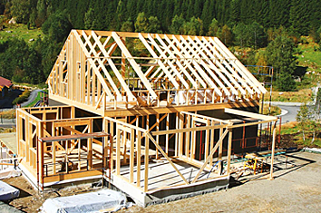

Звоните нам по телефонам
+375 (29) 674-674-9
+375 (17) 346-23-98
Компания «Каркасные строительные технологии» представлена на белорусском рынке уже 15 лет. Мы предлагаем услуги по строительству жилых домов и сооружений иного назначения методом каркасно-щитового строительства. Мы заслуженно гордимся десятками успешно реализованных серьезных ответственных проектов. Каркасные дома строятся нами не только в Беларуси, но и в соседних странах. Качество работы гарантируем!
Каркасные дома - это быстровозводимые конструкции (H2)Можно выделить ряд важных преимуществ каркасных домов в сравнении с привычными постройками из дерева или кирпича:
Таким образом, каркасное щитовое строительство – это выгодное вложение ваших денег. Вы экономите свои финансы, сберегаете время и силы. С небольшими затратами вы получаете собственный жилой дом или дачу мирового уровня.
чистота
конструкция
качества
сейсмоустойчивость
строительства
возведения
| Этап | Работы и материалы |
|---|---|
| Перекрытия и основа полов (для 1-го и 2-го этажей и мансарды) | Используются балки Mitek (сухая струганная древесина с металлическими пластинами), утеплитель Paroc, теплоизоляция Utafol, плиты Kronopol. |
| Стены (наружные несущие, внутренние перегородки) | Для сооружения каркаса применяются сухие струганные балки, внешняя облицовка проводится плитками Kronopol, внешняя теплоизоляция Paroc. |
| Кровля (сооружение стропильной системы, обустройство тепловой и гидроизоляции) | Используются стропильная система Mitek (деревянные фермы, металлические крепления), утеплитель Parok, пароизоляция Utafol, гидроизоляция Utavek, решетки и контр-решетки. |
| Дополнительные работы | Пропитка деревянных каркасных элементов дома для улучшения огнестойкости, монтаж временных связей и мауэрлата. |
Строительство дома – это процесс, который состоит из множества шагов. Если вы знаете, что делать дальше, после окончания очередного этапа работа идет гораздо быстрей. У профессиональных строителей это знание приходит с опытом, а вам поможет хотя бы примерный график работ. Это позволит заранее планировать свои действия, знать, что делать далее, завозить материалы, и когда может понадобиться помощь специалистов, к примеру, электрика, сантехника или кровельщика.
У множества рук должна быть одна цель! Организация времени и материалов это важный момент при постройки дома, и не следует ей пренебрегать. И не важно с кем вы работаете, - с профессионалами, друзьями, или подсобными рабочими.
Тщательное планирование позволит видеть всю картину в целом, понимать, где вы находитесь и не впасть в отчаяние, если строительство по каким-то причинам остановиться. Примерный перечень работ для дома, возводимого по технологии платформа, приведен ниже, конечно всегда возникают неожиданности, но используйте его хотя бы в качестве ориентира. Тщательное планирование позволит видеть всю картину в целом, понимать, где вы находитесь и не впасть в отчаяние, если строительство по каким-то причинам остановиться. Примерный перечень работ для дома, возводимого по технологии платформа, приведен ниже, конечно всегда возникают неожиданности, но используйте его хотя бы в качестве ориентира.
Каркасное щитовое строительство с помощью нашей компании позволит вам получить опции. Мы можем использовать различные дополнительные материалы для отделки и облицовки, по желанию заказчика. Также мы можем спроектировать и установить в вашем дому систему воздушного отопления. За дополнительную плату от 320 у.е. за квадратный метр каркасные конструкции и дома в целом проходят чистовую отделку.